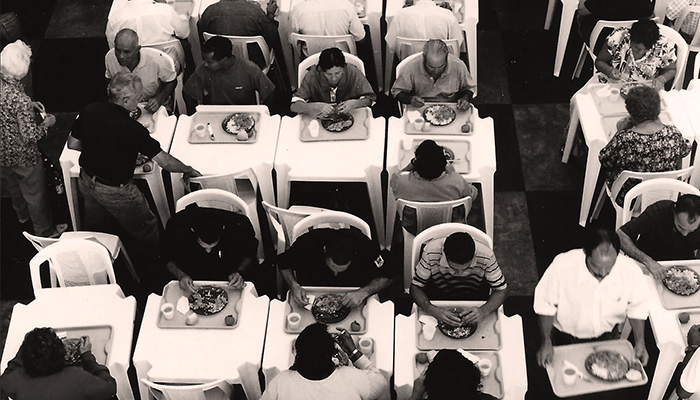
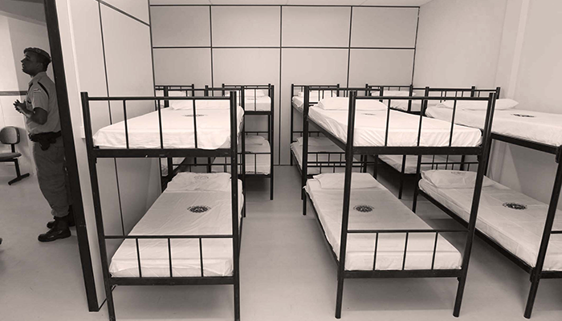

MENU
Sobre
Votação atual
Votações anteriores
VOTE: Onde investir R$400 mil?

Foto: Thais Antunes

Foto: Manu Dias - AGECOM
Restaurantes
Acolhimento
Implantação de restaurantes comunitários
Segurança alimentar para a população em situação de risco
Refeições saudáveis e de alta qualidade a custo acessível (sendo gratuitas para crianças até 6 anos)
Aplicação em: Mooca e Itaquera
Implantação de serviços de acolhimento institucional à população em situação de rua
Abrigo provisório para adultos e famílias
Promoção de hábitos e atitudes de interação social com as pessoas da comunidade
Aplicação em: Campo Limpo, Lapa, Santana e Vila Mariana
⚠️ Esta votação foi encerrada. O sistema de votos não está mais ativo.
Reflita, discuta, clique e vote!
Restaurantes
Google
Facebook
Reflita, discuta, clique e vote!
Acolhimento
Google
Facebook